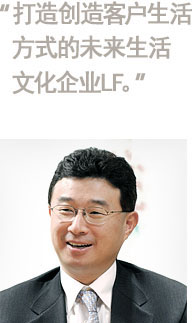

CEO致辞
我们承诺将为了带给顾客与众不同的具有自豪感的品牌，带给顾客特别的价值的企业而更加努力。

LF意味着‘Life in Future’，旨在打造一家从新的视角，通过品牌给每个客户创造适宜的生活方式，以带给梦想和感动的未来生活文化企业。
时装并非单纯的指衣服。时装中融入了反映时代洪流的文化和趋势，能够体现穿衣的特点和Life Style。同时，包含着制作衣服的设计师和品牌固有的哲学理念，囊括人类的感性所能够渗透到的几乎所有领域的正是时装，从每天都不断延续的平凡但却珍贵的日常生活，乃至入学、第一次入职上班、生日、结婚、商务会议等重要而又特别的纪念日，LF时装通过各种时装品牌为了让顾客的生活更加引人注目而不懈努力。
目前，LF时装正在成长为从绅士装开始，囊括淑女装、休闲装、运动装和户外时装，乃至饰品的全方位时装企业，并且正以无人能比的热情引领着大韩民国的时装产业。自1974年创立之后近40年间，LF时装主导新的趋势，提出风格与众不同的时装文化，并让顾客的生活变得更加美好且丰富。特别是，以创新模式而闻名的绅士装MAESTRO、英国风正统传统品牌DAKS、现代传统休闲装HAZZYS、欧洲风正统户外时装Lafuma等LF时装的品牌被认证为代表时代的实力品牌。LF时装品牌的飞跃和成长可以说是其保持长远的眼光不断前进，对所有产品质量进行不断的研究和积极的投资，为应对全球化市场进行人才培养和设计及强化营销战略所带来的结果。另外， LF时装鼓励每一个成员都能够具备专业的领导能力，富有创意的企业文化和首先解读顾客心意的细腻服务，LF时装在这些方面所做出的努力也是不可或缺的要素。
现在，LF时装将超越韩国国内顶级的时装文化企业，跃升为全球性生活文化企业。为此，要进一步强化设计和质量、人才、企业文化等内部力量。而且，在将LF时装的代表品牌培育成为全球性知名品牌的同时，还积极推进向海外市场的进军和新事业的开发，从而奠定持续成长的坚实基础。
LF时装成长为全球性的生活文化企业，是为了在更多的方面让顾客的Life Style变得美好而丰富。我们承诺将为了带给顾客与众不同的具有自豪感的品牌，带给顾客特别的价值的企业而更加努力。以火热的热情和卓尔不群的创意以及持续不断的挑战开启顾客的崭新未来。
时装并非单纯的指衣服。时装中融入了反映时代洪流的文化和趋势，能够体现穿衣的特点和Life Style。同时，包含着制作衣服的设计师和品牌固有的哲学理念，囊括人类的感性所能够渗透到的几乎所有领域的正是时装，从每天都不断延续的平凡但却珍贵的日常生活，乃至入学、第一次入职上班、生日、结婚、商务会议等重要而又特别的纪念日，LF时装通过各种时装品牌为了让顾客的生活更加引人注目而不懈努力。
目前，LF时装正在成长为从绅士装开始，囊括淑女装、休闲装、运动装和户外时装，乃至饰品的全方位时装企业，并且正以无人能比的热情引领着大韩民国的时装产业。自1974年创立之后近40年间，LF时装主导新的趋势，提出风格与众不同的时装文化，并让顾客的生活变得更加美好且丰富。特别是，以创新模式而闻名的绅士装MAESTRO、英国风正统传统品牌DAKS、现代传统休闲装HAZZYS、欧洲风正统户外时装Lafuma等LF时装的品牌被认证为代表时代的实力品牌。LF时装品牌的飞跃和成长可以说是其保持长远的眼光不断前进，对所有产品质量进行不断的研究和积极的投资，为应对全球化市场进行人才培养和设计及强化营销战略所带来的结果。另外， LF时装鼓励每一个成员都能够具备专业的领导能力，富有创意的企业文化和首先解读顾客心意的细腻服务，LF时装在这些方面所做出的努力也是不可或缺的要素。
现在，LF时装将超越韩国国内顶级的时装文化企业，跃升为全球性生活文化企业。为此，要进一步强化设计和质量、人才、企业文化等内部力量。而且，在将LF时装的代表品牌培育成为全球性知名品牌的同时，还积极推进向海外市场的进军和新事业的开发，从而奠定持续成长的坚实基础。
LF时装成长为全球性的生活文化企业，是为了在更多的方面让顾客的Life Style变得美好而丰富。我们承诺将为了带给顾客与众不同的具有自豪感的品牌，带给顾客特别的价值的企业而更加努力。以火热的热情和卓尔不群的创意以及持续不断的挑战开启顾客的崭新未来。
代表理事 会长 Koo Bon Keol